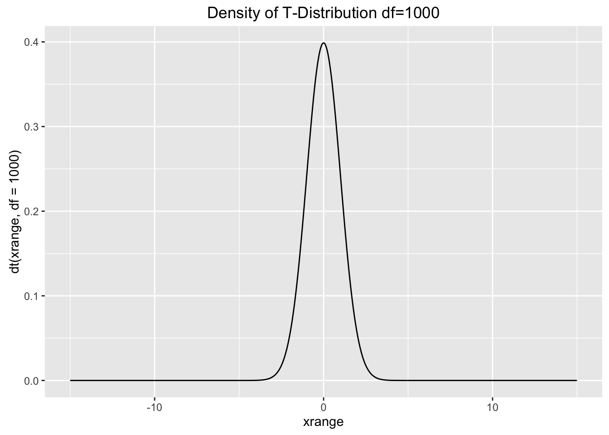
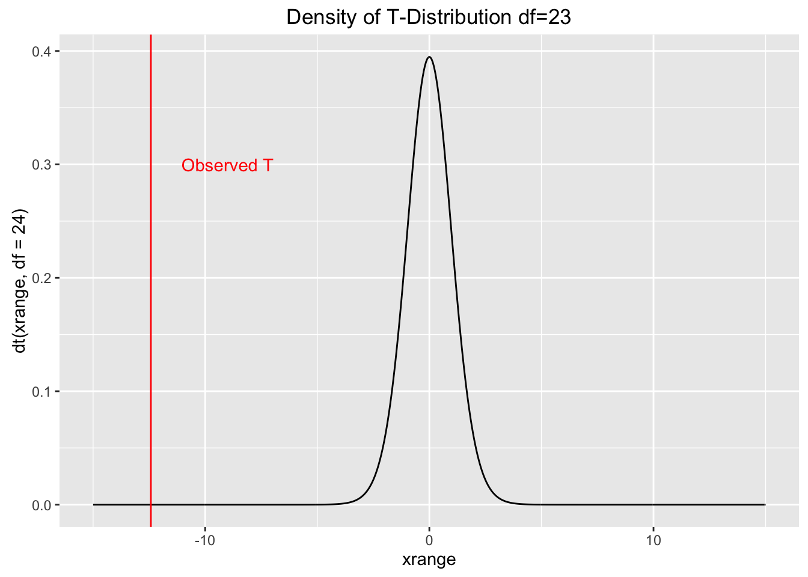

Hypothesis Testing
Induction versus Deduction
Inductive reasoning is the “bottom-up” approach to reasoning. Proceeding from specific observations to general explanations. Deduction goes the other way: from general to specific. All methods of doing science use both inductive and deductive reasoning, but the emphasis that they receive differs.
Deduction
- Emphasis is on falsification
- Requires multiple working hypotheses
- In the end, there is (hopefully) only one that hasn’t been falsified
- Limitation: “correct” hypothesis MUST be among the alternatives studied
hypotheticodeductive
Induction
- Emphasis is on confirmation
- Builds and modifies hypothesis based on previous knowledge
- Limitation: may “get off on wrong foot” if hypothesis is just plain wrong

induction
Testing Hypotheses
Consider a fake dataset of body mass and femoral head diameters from male and female baboons.
Read this into R on your own, and make a boxplot like the one below, with the points overlaid on the boxes.
Suppose we want to test the scientific hypothesis that there is a relationship between sex and femoral head diamter. To do this, we first create a statistical null hypothesis.
The null hypothesis
The null hypothesis is the simplest possible explanation for a phenomenon. This explanation is usually that random variation is responsible for any apparent pattern.
In the case of our baboons, the null hypothesis is that femoral head diameter is in NO way related to sex, and that any apparent association between the two is due to random chance.
Alternatives to the null
Next, we create one or more statistical alternative hypotheses. In our baboon case, the alternative is that the difference between male and female femoral head diameters is too great to be accounted for by chance alone. Most of the time, we don’t explicitly specify the alternative, we just suffice it so say that the alternative is “not \(H_0\)”
The alternative hypothesis is simply focussed on the pattern in the data…not the cause of it.
The all powerful p-value
The p-value is an estimate of how likely our data are, assuming the null hypothesis is true.
In terms of conditional probability, the p value represents \[ P(Data|H_0) \]
If we have a very small p-value, this implies that it is very unlikely to observe data that are as extreme as our data, assuming the null hypothesis is true. In the case of our baboons, we would probably use a T-test to compare group means. Like all parametric statistics, the T-test returns a test statistic that is in this case called T, and measures how far the group means are from one another. Because we are assuming that the null hypothesis is true for the moment, we can compute a disribution of how likely it is to get various values of T when there are no differences between groups.
library(ggplot2)
xrange <- seq(-15, 15, 0.05)
qplot(x=xrange, y=dt(xrange, df = 1000), geom="line", main="Density of T-Distribution df=1000")
qplot(x=xrange, y=dt(xrange, df = 24), geom="line", main="Density of T-Distribution df=23") +
geom_vline(xintercept = -12.4224, col="red") +
annotate(geom="text", x=-9, y=.3, label="Observed T", color="red")
Our T-test would return a very low p value, because it would be highly unlikely to get two sex groups with means as different as our baboons, if the variation was attributable only to chance. We know this because we know the distribution of the T statitic when the null hypothesis if true.
If you only remember one thing from this class, remember this:
The p-value is an estimate of how likely our data are, assuming the null hypothesis is true.
Type I and Type II Errors.
| The Truth | Retain \(H_0\) | Reject \(H_0\) |
|---|---|---|
| \(H_0\) True | Correct! | Type I error (\(\alpha\)) |
| \(H_0\) False | Type II error (\(\beta\)) | Correct! |

type I, type II
Statistical power is related to Type II errors, and is calculated as \(1 - \beta\). This tells us how likely we are to detect an effect when one actually exists. Before starting a study it is worth doing a power analysis to determine the rate at which an effect of a given size will be detected with a given sample size.
Type I and Type II error rates are necessarily inversely related to one other, so to decrease one is to increase the other. This relationship is not simple, though. Type II error rates depend on a lot of things, like the sample size and strength of the effect.
Statistical Significance versus Biological Significance
Given very large sample sizes, even tiny, virtually meaningless differences can become statistically signficant, because the statistical power increases as sample size increases. It is therefore important (especially in the days of easy access to lots of data) to be careful how you interpret statistical significance.
For example, imagine that you showed with vast sample sizes that two populations differ in height by an average of 0.6mm, and your p value was 0.00002. This is a very statistically signficant result, but it is unclear if this diference is large enough to have much biological meaning for the two populations. The overwhelming take-away message of this statistical test should be that the populations are almost the same.
Don’t be a slave to p<0.05!
Three Frameworks For Testing Hypotheses
Our example data: Ant data from Gotelli CH 5
Read this data into R yourself
Lets test the hypothesis that the number of ant nest in forests differs from the number of ant nests in fields.
Monte Carlo
Monte Carlo refers to a world-famous casino, in a town of the same name on the French Riviera (in the Principality of Monaco).
In Monte Carlo analysis data are randomly reshuffled over and over to specify the null hypothesis, and these reshufflings are compared against the observed data.
There are four steps:
- Decide on a test statistic
- By reshuffling, create a distribution of the test statistic that would be expected under the null hypothesis
- Decided on a one-tailed or two-tailed test
- Compare the observed to the null distribution and calculate the p value.
1
For our test statistic, we will use the absolute value of the mean of the forest ants minus the mean of the field. We will want to calculate this over and over, so we will make a function to do it.
abs.mean <- function(ant_counts, habitats) {
means <- tapply(ant_counts, habitats, FUN = mean)
abs_diff <- abs(means[2] - means[1])
return(abs_diff)
}Parametric
Bayesian

frequentists_v_bayesians